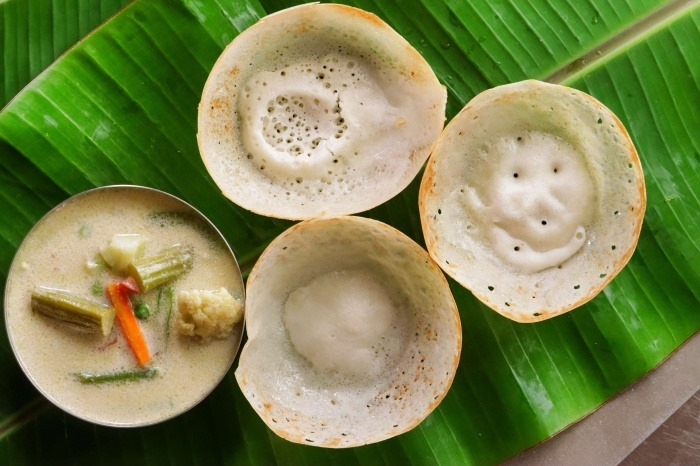

INGREDIENTS:
- 1 tsp Cumin/Jeera
- 1.5 tbsp Coriander seeds
- ½ Star Anise
- 3 Cloves
- 3 Cardamom
- 1/2 Inch Cinnamon
- Nutmeg - Small Piece
- 1/2 tsp Black pepper
- 1/2 Mace
For Marinating-
- 1/2 kilo Chicken
- 1.5 tbsp Ginger Garlic paste
- tbsp Chopped Ginger
Biryani masala-
- 1. 1/2 cup Curd
- 2. 1/2 cup Fried Onions
- Salt to taste-
- 1. 1 tbsp Red chilli powder
- 2. 2 tbsp Oil
Biryani Rice-
- 1. 2 liters Water
- 2. 5 Cardamom
- 3. 1 Star Anise
- 4. 1 Bayleaf
- 5. 1.5 Cinnamon
- 6. 1 tbsp Lemon Juice
- 7. 2 cups Basmati Rice (300 gms)
- 8. 3 tbsp Salt
- 9. 4 Slit green chillies
For Biryani-
- 1. 3 tbsp Oil
- 2. 2 tsp Ghee
- 3. 1 Black Cardamom
- 4. 3 Cardamom
- 5. 4 Cloves
- 6. 1 Inch Cinnamon
- 7. Marinated chicken
- 8. 1/4 cup Water
- 9. 6 - 7 Slit green chillies
- 10. 1/4 cup Rice Starch
- 11. 3 tbsp Fried onion
- 12. 2 tbsp Oil
- 13. 2 tsp Red food colour (Optional)
- Partially cooked Rice
- 1/3 cup Mango Pickle (60 gm)
INSTRUCTIONS:
Blend all Biryani masala ingredients to a fine powder.
Marinate the Chicken with all the above-mentioned ingredients and refrigerate for 2 hours.
Heat oil in a deep vessel and add to it, Black Cardamom, Cardamom, Cloves, Cinnamon, marinated chicken,
and water with a covered lid and cook on high flame for 5 minutes and on a medium flame for 10 minutes stirring intermittently.
Add a quarter cup of water and Green Chillies to the Avakaya pickle and add this pickle to the simmering chicken. Cook till oil separates.
Remove the vessel from the flame and set it aside.
Add all the masala ingredients, Green Chillies and Salt to water and bring it to a boil. Now, add soaked Rice, Lemon Juice to this boiling
water and cook on high flame till it is cooked 70%
Add chicken to the 70% cooked Rice
Add red food colour, Fried Onions, Oil, Rice starch to the 70% cooked Rice. Now, prepare for dum by using Maida (All purpose flour)
paste on the rim of the vessel to cover tightly without allowing the steam to escape. Cook it for 5 minutes on high flame and 3 minutes
on low flame. And leave it for 20 minutes. If the steam gets heavy, remember to turn off the stove.
Now garnish with Fried Onions and serve with chilled Raita.